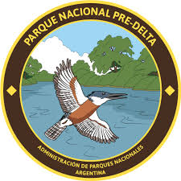
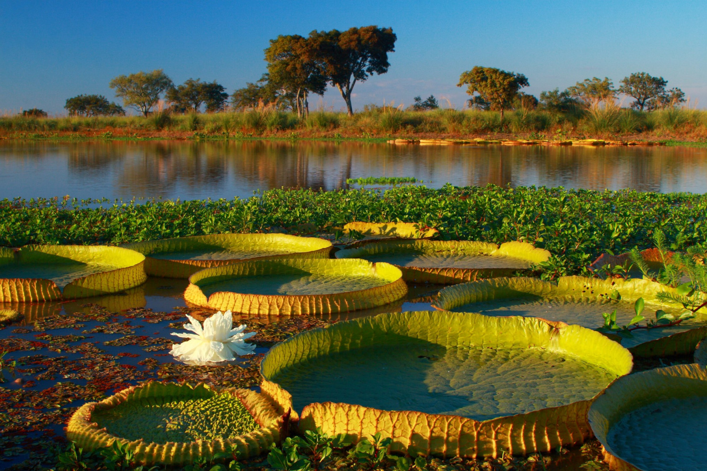
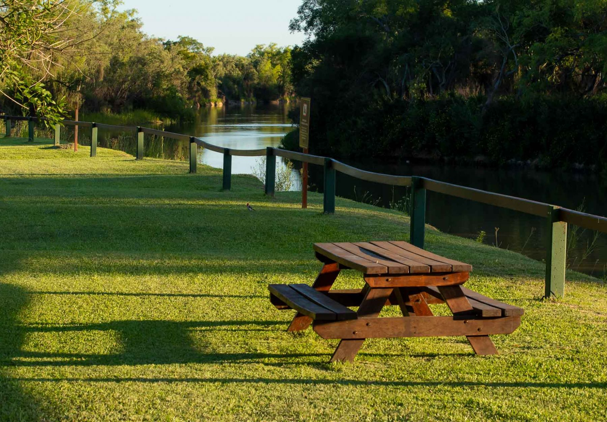
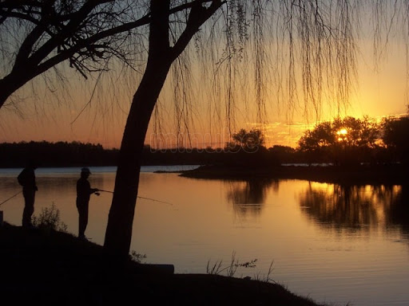

Provincia de Entre Ríos
Ubicado en la provincia de Entre Ríos, el Parque exhibe la magia de un paisaje en constante transformación, con islas, arroyos, lagunas y riachos modelados por el río Paraná. Su historia está marcada por diversas influencias: desde el pueblo originario chaná hasta la inmigración alemana del Volga en el siglo XIX; así como la actividad ganadera que estableció rutas de comercio y asentamientos en la región.
Galeria


